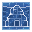

Marble quarry
| Marble quarry | |
|---|---|

| |
Basic information
| |
Required Technology :
|
Marble quarrying |
Related pages :
|
Mining |
Location(s)
| |
| Cabin in the woods, Quarry | |
It can be built from the beginning (bug ?). It is in the quarry region and near the cabin in the woods
Build
Before you can use the quarry, you first have to build it. The site looks like this:
After you build the quarry, you can manually mine marble blocks. The quarry now looks like this:

After you unlock zombies, you may build a zombie marble quarry on the workbench near the cabin in the woods and have your minions work there. This is how it looks, when both zombie quarries are built but only the left one is working:

Recipes
| Item | Materials Required | Energy | Notes |
|---|---|---|---|
 |
12× Flitch 4× Simple iron parts 4× Nails |
- |
This must be built prior to usage. Yields |
| 2× |
4× Wood wedge |
- |
Need at least a Rusty pickaxe or better ones. |

|
8× Flitch 4× Nails 1× Pickaxe I |
This blueprint is available in two variations: left and right |
| ||||||||